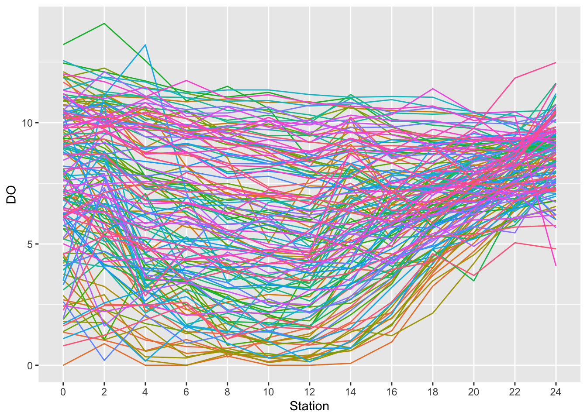

1.2 Repeated measurements
In many experiments there is interest in understanding how things change over time. It is natural that each experimental unit (patient, animal, specimen) is measured repeatedly over time. This leads to a repeated measurements structure. A random effects model can be used to recognise that each individual has their own (random) characteristics which they carry with them throughout the series of repeated measurements.
The plot below show the Clyde data on DO plotted against Station with each survey of the river on a particular date given a unique identifier. (Recall the Year is on a continuous scale with individual days identified by where they sit on a proportional scale.) Although this does not involve time, it still represents a repeated measurement structure.
path <- rp.datalink("DO_Clyde")
load(path)
clyde <- mutate(clyde, id = factor(Year), Station = factor(Station))
ggplot(clyde, aes(Station, DO, group = id, col = factor(id))) +
geom_line() + theme(legend.position="none")
A simple model uses the covariates identified in our earlier work with Station added as a factor and with a random effect for each survey of the river. Close inspection of the plot may give us some cause for concern as the residuals seem to be systematically low at very low and very high fitted values. We will explore more sophisticated models later. Nonetheless this simple provides a first assessment of the nature and size of the different effects at work.
library(nlme)
model <- lme(DO ~ Year + Temperature + Salinity + Station, random = ~ 1|id, data = clyde)
plot(model)
## numDF denDF F-value p-value
## (Intercept) 1 1798 33.2119 <.0001
## Year 1 149 38.2062 <.0001
## Temperature 1 1798 944.1878 <.0001
## Salinity 1 1798 41.1751 <.0001
## Station 12 1798 80.7607 <.0001## Value Std.Error DF t-value p-value
## (Intercept) -1.984023e+02 34.427073458 1798 -5.762973157 9.703766e-09
## Year 1.073006e-01 0.017359428 149 6.181112937 5.803099e-09
## Temperature -6.080902e-01 0.019789680 1798 -30.727639279 5.153414e-167
## Salinity -6.403902e-02 0.009979926 1798 -6.416782593 1.775406e-10
## Station2 -1.162670e-01 0.132708985 1798 -0.876104833 3.810901e-01
## Station4 -1.005766e+00 0.134251052 1798 -7.491677966 1.060404e-13
## Station6 -1.246029e+00 0.135887366 1798 -9.169572587 1.260420e-19
## Station8 -1.634330e+00 0.138578920 1798 -11.793499975 5.653119e-31
## Station10 -1.808147e+00 0.142454529 1798 -12.692803322 2.041265e-35
## Station12 -1.917212e+00 0.149310251 1798 -12.840460934 3.586872e-36
## Station14 -1.206095e+00 0.155097751 1798 -7.776353979 1.247726e-14
## Station16 -7.994754e-01 0.173955254 1798 -4.595868106 4.609480e-06
## Station18 -1.967701e-03 0.197033609 1798 -0.009986628 9.920331e-01
## Station20 6.864268e-01 0.235454384 1798 2.915328004 3.597130e-03
## Station22 1.465074e+00 0.288116720 1798 5.085000890 4.059286e-07
## Station24 2.193303e+00 0.307531332 1798 7.131964891 1.428077e-12